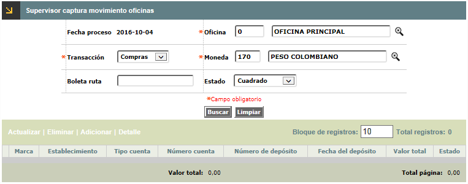
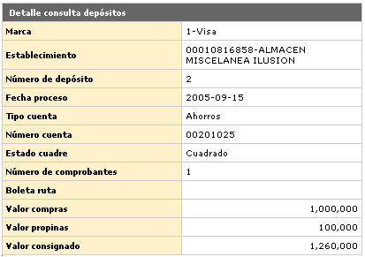

Supervisor captura movimento oficina |
A través de esta opción el sistema permite el ingreso manual del movimiento de transacciones de Pago, Avances, Pago de impuestos y Compras o consumos realizados por los clientes en los establecimientos. Adicionalmente, cuenta con la opción Detalle para la consulta de los movimientos cuando por efecto de errores en la captura o malas liquidaciones del movimiento, éste queda descuadrado, requiriendo de una autorización para ser procesado en la operación diaria. El procedimiento para capturar el movimiento es el siguiente: una vez se despliega el formulario se debe ingresar el código de la oficina o sucursal de la que se va a capturar movimiento, sumado a la transacción y la moneda, se escoge la opción adicionar y se ingresan los datos.
Si el movimiento presenta alguna diferencia o descuadre es posible corregirlo puesto que el sistema no permite procesar movimiento cuya captura presente un estado diferente al de ‘cuadrado’, esto es, inconsistencias no solamente en valor de los comprobantes, sino también en cantidad de comprobantes, etc. Cada movimiento debe ser desagregado en todos sus conceptos. En caso de que el movimiento requiera ser procesado con dichas inconsistencias es necesario cambiar el estado del comprobante por el de ‘ok supervisor’ el cual indica que el movimiento se procesará de todas maneras. El ingreso o no del valor de Descuento, depende del parámetro correspondiente definido en la opción Parámetros operativos del grupo de Tablas de la entidad financiera del módulo Núcleo; así mismo, la obligatoriedad o no de diligenciar determinados campos depende de lo definido por la entidad en la opción Parámetros de captura de este mismo módulo.
Adicionar: De acuerdo a lo que se haya seleccionado en la opción Transacción, el sistema muestra el ingreso manual del movimiento de transacciones de Compras, Avances, Impuestos, y Pagos.

Fecha proceso |
Campo de salida o no ingresable, que contiene la fecha del sistema para la cual se ingresa movimiento. |
Oficina |
Campo obligatorio en el que se digita el código de la oficina para la cual se va a capturar o supervisar (dependiendo de la opción dentro de menú) el movimiento. Estos códigos corresponden a los definidos en la tabla Estructura orgánica del Núcleo. Una vez ingresado el código, se ejecuta la consulta, para proseguir con la captura. |
Transacción |
Campo obligatorio que posee lista de valores poblada en la opción Origen de transacciones del Núcleo de la cual se debe seleccionar el código de la transacción correspondiente o digitar el código válido de la misma, el sistema completará con ceros a la izquierda. |
Moneda |
En este campoobligatorio con lista de valores se debe seleccionar la Moneda que aplica para el movimiento a ingresar; el sistema despliega por defecto la moneda definida en la opción Datos de licenciamiento. |
Boleta de ruta |
Campo numérico de 3 dígitos, obligatorio, corresponde a un segundo nivel de clasificación o agrupación del movimiento a capturar y pertenece al número consecutivo de los comprobantes de control permitidos por cada oficina en la captura del movimiento, producto de la operación diaria. Los rangos de estos consecutivos son determinados previamente en la opción Boletas de Ruta. |
Detalle: Si el usuario invoca
la opción Detalle se despliega el siguiente formulario. En él
se puede consultar también la opción de localización,
a través del globo ubicado en la parte superior derecha.

Actualizar:
Si el usuario invoca la opción Actualizar se despliega un nuevo formulario
en el cual los únicos campos modificables son: Número tarjeta,
Número comprobante, Fecha comprobante, Número autorización,
Plazo, y Causal.
Compras | Avances | Impuestos | Pagos